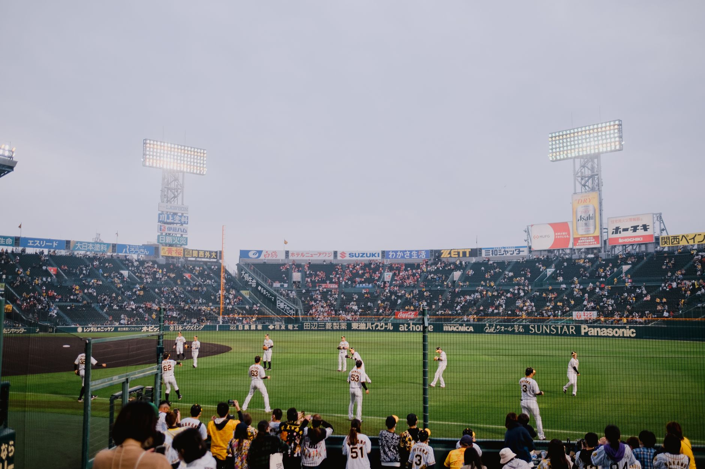

The rising value of modern baseball talent
As we look toward the future of Major League Baseball, the concept of player value is evolving faster than ever. It is no longer just about raw power or high velocity; it is about versatility, defensive metrics, and the ability to perform under high-pressure postseason scenarios. The 2026 free agency class is shaping up to be one of the most intriguing in recent history because of the sheer number of young players hitting their prime simultaneously.
Teams are increasingly looking for players who offer long-term stability rather than short-term fixes. This shift in philosophy means that players who have shown consistent growth over the last two seasons are seeing their market value skyrocket. When a player demonstrates that they can adapt to new pitching styles or improve their plate discipline, they become prime targets for rebuilding franchises and contenders alike.
Key players driving the 2026 market
While the full list of rising stars is extensive, several key individuals have stood out by significantly raising their stock during recent seasons. These players have moved from being 'promising prospects' to 'established cornerstone pieces.' Whether it is through a sudden jump in slugging percentage or a dramatic improvement in strikeout rates, their statistical profiles are telling a story of imminent stardom.
The difference between a good player and a superstar free agent is often found in the consistency of their mid-season performance.
For many of these athletes, the 2024 and 2025 seasons served as the ultimate proving grounds. They faced elite pitching, managed heavy workloads, and maintained health through the grueling summer months. This durability is a massive factor in how front offices calculate contract offers, as they are essentially buying both talent and reliability.
How performance metrics impact contract negotiations
In the modern era, contract negotiations are no longer just a battle between agents and general managers; they are a battle of data. Every swing, every pitch, and every defensive movement is quantified. For the free agents set to hit the market in 2026, their 'stock' is built on a foundation of Statcast data and Expected Weighted On-Base Average (xwOBA).
When a player can prove that their success is not a fluke but a result of repeatable mechanics, their leverage increases. For example, a hitter who shows a consistent hard-hit rate even when their batting average dips is still viewed as a high-value asset. This distinction is what separates the players who sign massive multi-year deals from those who settle for one-year prove-it contracts.
Strategic moves for rebuilding franchises
For teams currently in a rebuilding phase, the 2026 free agency period represents a golden opportunity. Instead of chasing aging veterans on declining trajectories, these teams can use their cap space to acquire the rising stars mentioned in recent MLB reports. This strategy allows a team to build a competitive core that can grow together over several seasons.
The goal for these franchises is to find the intersection of high ceiling and manageable cost. By targeting players who have just raised their stock, teams can often secure talent before their price tag reaches the astronomical levels seen with established superstars. It is a high-stakes game of musical chairs where timing is everything.
Looking ahead to future league dominance
Predicting the landscape of baseball requires looking several years into the future. The players making moves in 2026 will dictate the competitive balance of the league well into the late 2020s. As these free agents sign with new clubs, we will see a ripple effect that changes the power dynamics of every division in the league.
To understand how these upcoming shifts might affect the standings, it is helpful to look at how current rosters are projected to evolve. For a deeper dive into how the current landscape might look after these major shifts, check out our analysis on the 2027 MLB Power Rankings: Early Offseason Projections at https://dhyey.bond/blog/2027-mlb-power-rankings-early-offseason-projections/. Staying ahead of these trends is essential for any true baseball enthusiast.
As the 2026 season approaches, keep a close eye on these rising stars. Their ability to maintain their current trajectory will determine whether they become the legends of the next decade or merely footnotes in the history of the game.
See Also
If you enjoyed this Baseball News article, check out 2027 MLB Power Rankings: Early Offseason Projections for more useful reading.